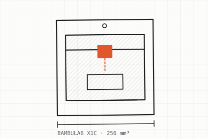

BambuLab X1C
Imprimante 3D FDM haute vitesse, chambre fermée — la machine de référence pour les pièces techniques.
- Volume d'impression · 256 × 256 × 256 mm
- Chambre fermée · matériaux techniques sans déformation
- AMS multi-matériaux · jusqu'à 4 filaments par pièce
- Buse 0,4 mm · détails fins et bon état de surface
- Calibration automatique · qualité constante d'une pièce à l'autre